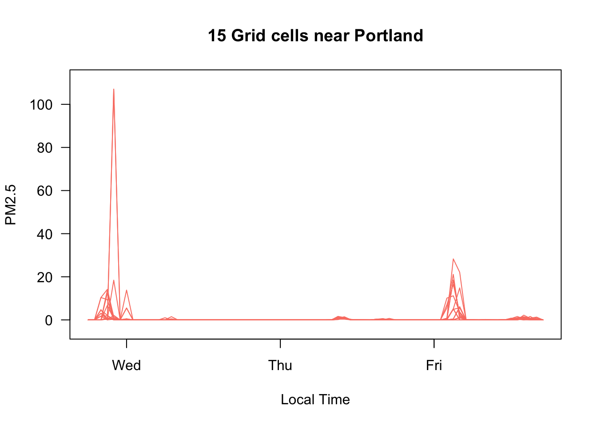

AirFireModeling_Introduction.RmdThe USFS Pacific Wildland Fire Sciences Lab AirFire team works to model wildland fire emissions and has created the BlueSky Modeling Framework. This system integrates a wide collection of models along the smoke modeling chain (fire information, fuel loadings, consumption modeling, emissions modeling, time rate of emissions modeling, plume height estimations, and smoke trajectory and dispersion modeling). The AirFireModeling package was created to make it easy to ingest and manipulate BluesSky model data in R. When combined with the PWFSLSmoke and MazamaSpatialUtils packages, this allowing direct comparison of model and regulatory monitoring data.
This article is meant to introduce AirFireModeling basic functionality, concepts, and terminology, and is not meant to be an exhaustive tutorial.
The AirFireModeling package offers consistent and flexible model loading functions. The bluesky_load() function can be used to load data from a single model run. The return type will be a RasterBrick which can then be manipulated with the raster package.
The raster_load() function can be used to load output from multiple models and/or model initialization times at once. This function returns a list of RasterBrick objects.
Data are obtained from the data archive on haze.airfire.org. The very first time data is requested it is first downloaded to the directory specified with setModelDataDir() and then converted from the original NetCDF format into a v2 format that follows CF conventions. This allows the raster package to work with data in “delayed evaluation” mode, vastly improving performance.
All future times data is requested, it will be found in the modelDataDir, and immediately available.
Also note that the raster package allows us to only load data from the region of interest. Although full datasets are initially downloaded and converted, data loaded into memory will include only those grid cells that lie with the boundary set by xlim and ylim parameters in the ~_load() functions.
Below is an example of loading a model using the two functions:
# Single model and modelRun
raster <- raster_load(
model = 'PNW-1.33km',
modelRun = 20200325,
xlim = c(-125, -115),
ylim = c(42, 50)
)
# Multiple models at once
rasterList <- raster_load(
model = c('PNW-1.33km', 'PNW-4km'),
modelRun = 20200325,
xlim = c(-125, -115),
ylim = c(42, 50)
)
# We could also specify modelRuns When model is loaded, it takes the object type Raster*. Because BlueSky models are temporal in nature, each model has multiple layers (time slices) of gridded values, organized along a time axis. In the AirFireModeling package, each slice is called a RasterLayer object, or layer for short. Multiple layers together, such as when model runs are loaded, are called RasterBrick objects, or brick. Accessing a layer in a brick is effectively accessing a model-slice at a certain time. For example, to access the eleventh hour in an hourly updated model may look something like this: model[[11]].
Mapping is easy with the AirFireModeling raster_map() function. The raster object passed in can be either a single RasterBrick or a list of them.
Raster* objects are inherently spatial (and temporal) whereas regulatory monitors loaded via the PWFSLSmoke R package are primarily temporal. In order to compare a BlueSky model with monitoring data we must be able to convert between the two world views.
To help with this, the package has both raster_toMonitor() and monitor_toRaster() functions which allow conversion from model data to PWFSLSmoke ws_monitor objects and back again.
The raster_toMonitor() function allows users to specify a longitude, latitude and radius and convert all model grid cells within that radius into PWFSLSmoke-compatible ws_monitor objects. These can then be used with any functions from the PWFSLSmoke or AirMonitorPlots packages.
model_Portland <- raster_toMonitor(
rasterList,
longitude = -122.68,
latitude = 45.52,
count = 15
)
PWFSLSmoke::monitor_timeseriesPlot(
model_Portland[[1]],
type = 'l', col = 'salmon'
)
title("15 Grid cells near Portland")